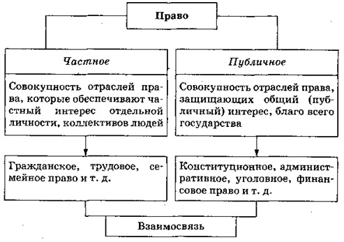
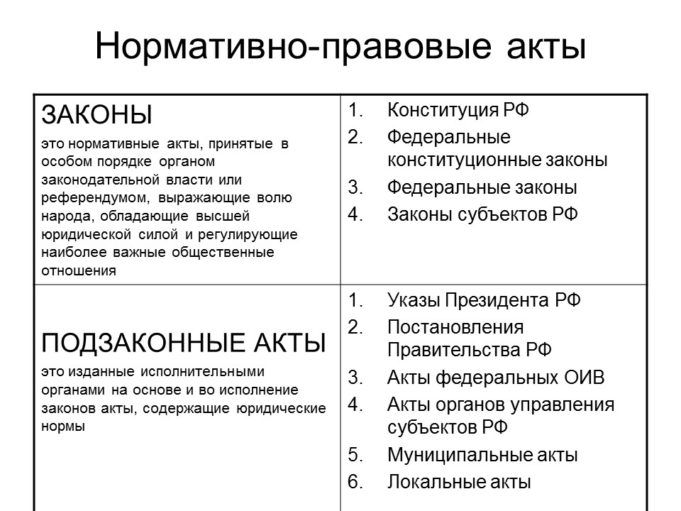

Система права — вся совокупность норм права данной страны.
Система права включает в себя: институт права, подотрасль права, отрасль права.
Институт права — это совокупность взаимосвязанных юридических норм, регулирующих определённый вид общественных отношений (например, институт собственности, институт гражданства и т. д.). Институты права объединяют нормативные правовые акты и правовые нормы.
Подотрасль права — это совокупность родственных институтов какой-либо отрасли права (например, избирательное право — это подотрасль конституционного права).
Отрасль права — это совокупность взаимосвязанных юридических норм, регулирующих определённую сферу однородных общественных отношений (например, гражданское право, семейное право, трудовое право). Вся система права подразделяется на отрасли: материальные (основное их содержание составляет установление прав и обязанностей субъекта) и процессуальные (нормы процессуального права устанавливают порядок реализации норм материального права).
Система права Российской Федерации включает в себя Конституцию РФ, федеральные конституционные законы, федеральные законы, постановления палат Федерального собрания РФ, указы Президента РФ и постановления Правительства РФ.
Основные отрасли права в РФ
В России система права охватывает около 30 отраслей, важнейшими из которых являются следующие:
Основные отрасли права в РФ
| Отрасль права | Содержание правовой отрасли |
|---|---|
| I. Материальное право — отрасли права, которые регулируют юридическое содержание общественных отношений, устанавливая права и обязанности субъектов. | |
| 1. Конституционное (государственное) право | Отрасль права, закрепляющая форму правления, государственно-территориального устройства, права и обязанности граждан, избирательное право и избирательную систему, порядок формирования, функции и взаимоотношения высших органов государственной власти. |
| 2. Гражданское право | Отрасль права, регулирующая имущественные отношения в обществе, а также связанные с ними личные неимущественные отношения: право собственности, обязательственные отношения, возникающие из договора, наследственное право и т. д. |
| 3. Административное право | Отрасль права, регулирующая общественные отношения, возникающие в процессе организационной и исполнительно-распорядительной деятельности должностных лиц и органов государственного управления: соблюдение правил дорожного движения, противопожарных и санитарных правил и т. д. |
| 4. Уголовное право | Отрасль права, состоящая из юридических норм, определяющих, какие общественно опасные деяния считаются преступными и какие наказания могут за них назначаться. |
| 5. Семейное право | Отрасль права, регулирующая брачно-семейные правоотношения: условия и порядок вступления в брак, прекращения брака, права и обязанности супругов, родителей и детей и т. д. |
| 6. Трудовое право | Отрасль права, регулирующая трудовые правоотношения: заключение, изменение и расторжение трудовых договоров, рабочее время и время отдыха. |
| 7. Финансовое право | Отрасль права, которая регулирует отношения, складывающиеся в процессе финансовой деятельности государства. |
| II. Процессуальное право — отрасли права, регулирующие процедурные и организационные вопросы реализации нормы материального права, разрешения юридических споров, защиты прав и законных интересов участников правоотношений. | |
| 1. Уголовно-процессуальное право | Отрасль права, включающая юридические нормы, которые регулируют основания и порядок производства по уголовным делам. |
| 2. Гражданско-процессуальное право | Отрасль права, состоящая из норм, регулирующих порядок судопроизводства по гражданским делам. |
| 3. Арбитражный процесс | Процесс прохождения дел в арбитражных судах. |
| 4. Административное судопроизводство | Судопроизводство по разрешению административных дел. |
| 5. Конституционное судопроизводство | Судопроизводство в Конституционном суде. |
Международное право
Отдельно выделяется международное право, которое не входит в систему права ни одного государства, поскольку представляет собой совокупность правовых норм, регулирующих отношения между государствами. Оно занимает особое место во всей системе права — это своего рода наднациональная отрасль права.
Частное и публичное право
Существует и другое деление системы права — на частное и публичное.
Публичное право — это отрасли права, которые закрепляют порядок деятельности органов государственной власти и управления. Предметом правового регулирования являются неимущественные отношения.
Основные отрасли публичного права — международное публичное право, конституционное право, административное право, финансовое право, уголовное и уголовно-процессуальное право.
Частное право — это отрасли права, которые охраняют и регулируют отношения частных дел. Предметом правового регулирования являются имущественные и неимущественные отношения.
Основные отрасли частного права — гражданское право, предпринимательское право, трудовое право и семейное право.
{kind=link}
Разграничение права на частное и публичное достаточно условно, поскольку частный и публичный интересы взаимосвязаны.
Нормативно-правовые акты
Когда государство принимает ту или иную правовую норму, оно закрепляет её в официальном письменном документе — нормативном (или правовом) акте. Нормы права различаются в зависимости от того, в каком документе они закреплены.
Нормы только тогда становятся правовыми, когда они формально определены, т. е. упорядочены, сформулированы и закреплены в различных актах государственных органов, которые называют источниками права. Основным среди источников права является нормативный правовой акт.
Нормативный правовой акт — правовой документ, изданный в особом процедурном порядке органом государственной власти, регулирующий общественные отношения.
Источниками права в России являются Конституция, федеральные конституционные законы, федеральные законы, указы и распоряжения президента РФ, постановления и распоряжения Правительства РФ, ведомственные акты федеральных органов исполнительной власти, конституции (уставы) субъектов РФ, законы субъектов РФ, акты органов исполнительной власти субъектов РФ, акты органов местного самоуправления. Также к ним относятся международные договоры и соглашения, ратифицированные в установленном порядке.
В РФ существует иерархия нормативно-правовых актов.
Система нормативных правовых актов РФ:
Федеральный уровень:
- Конституция РФ
- Федеральные законы:
-
федеральные конституционные законы регулируют вопросы, относящиеся к правовым основам государства, государственного строя, т. е. к предмету ведения Конституции РФ (Закон «О Правительстве РФ», Закон «О выборах Президента РФ» и др.);
-
текущие (обычные) федеральные законы регулируют всю массу остальных важнейших вопросов жизни общества (Гражданский кодекс РФ, Трудовой кодекс РФ и др.).
-
- Указы Президента РФ
- Постановления Правительства РФ
- Нормативные правовые акты министерств и ведомств
Региональный уровень:
- Конституция (устав) субъекта РФ
- Законы субъекта РФ
- Акты высшего должностного лица субъекта РФ
- Акты органов исполнительной власти субъекта РФ
- Акты органов местного самоуправления
Закон — это нормативный правовой акт, принятый в особом порядке органом законодательной власти или референдумом, выражающий волю народа, обладающий высшей юридической силой и регулирующий наиболее важные общественные отношения.
{kind=link}
Законотворческий процесс (законотворчество) — процесс принятия законов высшими органами государственной власти.
Стадии законотворческого процесса в РФ
| Наименование стадии | Её содержание |
|---|---|
| Законодательная инициатива | Выяснение потребности в принятии закона, изучение общественных отношений, для регламентации которых необходимо его принять. Субъекты права законодательной инициативы: Президент РФ, Совет Федерации, члены Совета Федерации, депутаты Государственной Думы, Правительство РФ, законодательные (представительные) органы субъектов РФ, Конституционный, Верховный суды РФ по вопросам их ведения. |
| Обсуждение законопроекта | Внесённый в порядке законодательной инициативы законопроект Советом Государственной Думы направляется в соответствующий профильный комитет (в нём ведётся основная работа над текстом законопроекта с привлечением экспертов, проведением парламентских слушаний, анализом предложений, альтернативных проектов и т. д.), который после обсуждения выносит проект на пленарное заседание Государственной Думы с собственными замечаниями и предложениями. Обсуждение законопроекта на пленарном заседании проходит три чтения, в ходе которых в его текст вносятся поправки. |
| Принятие законопроекта | Закон принимается Государственной Думой большинством голосов от общего числа её депутатов. |
| Утверждение законопроекта | Принятый Государственной Думой закон должен быть в течение 5 дней передан на одобрение Совета Федерации. Федеральный закон считается одобренным Советом Федерации, если за него проголосовало более половины от общего числа членов этой палаты. Принятый закон в течение 5 дней направляется Президенту РФ для подписания и обнародования. Президент РФ в течение 14 дней должен принять решение. Президент РФ обладает правом вето. Для преодоления отлагательного вето Президента РФ закон при повторном голосовании должен получить 2/3 голосов депутатов Государственной Думы и членов Совета Федерации. |
| Промульгация (от лат. promulgation — публичное объявление) закона | Закон подлежит обязательному опубликованию в течение 7 дней после подписания его Президентом РФ в «Российской газете» или в Собрании законодательства РФ. Вступает же в силу закон по истечении ** дней со дня его официального опубликования, если самим законом не установлен иной порядок. |